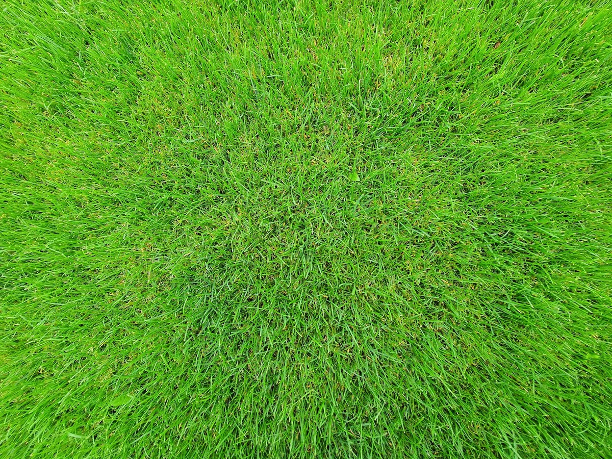

In Winnipeg, both sod and seed can give you a full, healthy lawn — but they are not interchangeable. The right choice depends on your budget, your timeline, and what your specific yard is dealing with this spring.
Not sure which option is right for your yard? Get a free quote and we'll walk you through the best choice for your Winnipeg property.
What's the Difference Between Sod and Seed?
Sod is pre-grown turf — typically a Kentucky Bluegrass blend or a similar cool-season mix — cut into strips and laid directly onto prepared soil. You get an instant lawn: established, walkable, and visually complete within a few weeks of install.
Seeding starts from scratch. Grass seed is broadcast across prepared soil and germinates over two to four weeks, then fills in over one full growing season. It is slower and requires more hands-on care early on, but it costs significantly less and gives you more flexibility in choosing grass species suited to your specific conditions.
The biggest practical difference is timeline. Sod delivers a finished look in days. Seed delivers a finished lawn in months. For Winnipeg homeowners dealing with winter kill, a post-construction mess, or a complete lawn renovation, understanding which option fits your situation saves both money and frustration — and affects how much work the rest of the season involves.
Cost of Sod vs. Seed in Winnipeg
Cost is where most homeowners make their final decision. Sod installation in Winnipeg typically runs $3.00–$4.50 per square foot installed, depending on grading requirements, site access, and the total area. A standard 1,000 sq ft lawn runs $3,000–$4,500 all-in, including labour, soil prep, and the sod itself.
Professional seeding costs significantly less — typically $0.50–$1.00 per square foot for a quality seeding job with proper soil prep. On the same 1,000 sq ft area, you're looking at $500–$1,000 versus $3,000–$4,500 for sod. The savings are real.
But so is the tradeoff. Seeded lawns take a full season to establish, need more consistent watering, and are far more vulnerable to weeds and uneven germination in year one. If your budget allows sod and you need usable lawn quickly — for kids, pets, or curb appeal before summer — sod is almost always worth the premium in Winnipeg's short growing season.
Winnipeg's clay-heavy soil compacts harder than most Canadian cities. Skipping proper grading and soil prep before either sod or seed is the single biggest reason new lawns fail within two seasons.
When to Install Sod or Seed in Winnipeg
Timing matters a great deal in Manitoba's zone 3 climate, where the growing season runs roughly late April through early October.
Sod can go in from the moment the ground is workable — typically late April — through early September. The best window is late April through June, when temperatures are mild and spring rainfall does some of the watering work for you. Avoid installing sod in July's peak heat unless you can commit to daily watering for the first two weeks.
Seeding works best in two windows: early spring (late April to mid-May) and late summer (mid-August to mid-September). Fall seeding is underrated in Winnipeg — cooler temperatures and more consistent moisture mean better germination rates and far less weed competition than spring. If you miss the spring window, waiting for late August is better than seeding in June or July, when heat stress and dandelion pressure make results unpredictable.
We can price out sod or seeding for your Winnipeg property in minutes. Request a quote and we'll give you a clear number fast.
Which Is Better for Winnipeg's Climate and Soil?
Winnipeg's heavy clay soil and hard freeze-thaw cycles create specific challenges for any new lawn. Here's how each option holds up under local conditions.
Sod performs better on clay at install time. You're placing established root systems that push through soil compaction more effectively than seed trying to germinate in a dense, wet clay surface. Sod also survives Winnipeg's unpredictable spring temperature swings better — the root mat provides some insulation and the plant is already mature.
Seed on clay needs more work upfront. Without proper grading, aeration, and topdressing before seeding, germination rates drop significantly and you get patchy, uneven results. Thin coverage also gives weeds — dandelions especially — room to establish before your grass fills in. In Winnipeg, a poorly seeded lawn in spring can turn into a weed field by July.
For most Winnipeg homeowners replacing a damaged or dead lawn, sod is the more reliable outcome. For new builds, large back yards, or situations where budget is the primary constraint, professional seeding with thorough soil prep works very well — it just requires patience through year one.
Common Mistakes When Starting a New Lawn in Winnipeg
Whether you go sod or seed, these mistakes set Winnipeg homeowners back every season:
- Skipping grading and soil prep. Compacted clay stops roots and seed from establishing. Grading, topdressing, and light aeration before any install make a lasting difference.
- Watering inconsistently. Sod needs daily watering for the first two weeks. Seed needs light, twice-daily watering until germination. Most failures trace back to inconsistent moisture in the first 14 days.
- Installing too late in the season. Both sod and seed need several weeks to establish before Winnipeg's first frost. Mid-September is roughly the cutoff — later than that and you're gambling on survival.
- Ignoring weed pressure. New lawns are vulnerable. A targeted pre-emergent applied at the right time can save you from a summer spent fighting dandelions and crabgrass across a freshly installed yard.
Our landscaping services in Winnipeg include grading, soil prep, and full sod or seeding installs, so you're not piecing together three separate contractors for one job. We also offer spring and fall cleanup packages that can be bundled with a new lawn install to get your property set up properly from the start. Once your lawn is established, our full-yard maintenance keeps it looking sharp all season.
Get a Clear Price for Your Winnipeg Yard
No pressure, no runaround. You'll get a clear price based on your actual property — sod, seed, or whatever your yard needs most this spring.
Get a Free Quote